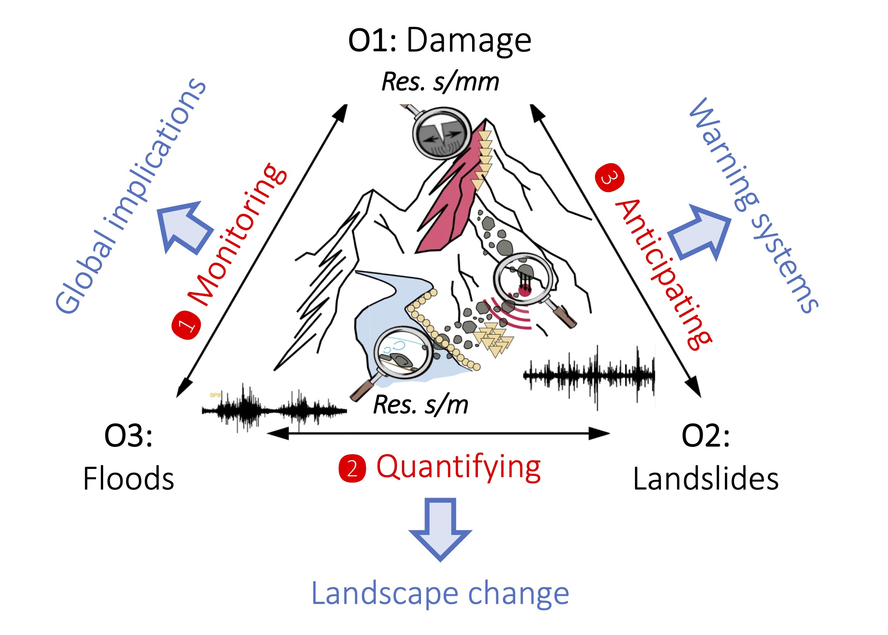
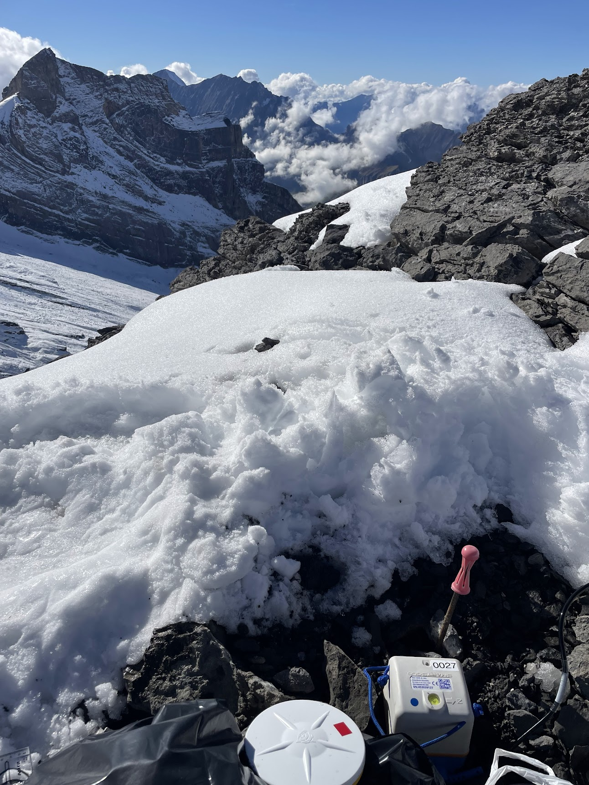
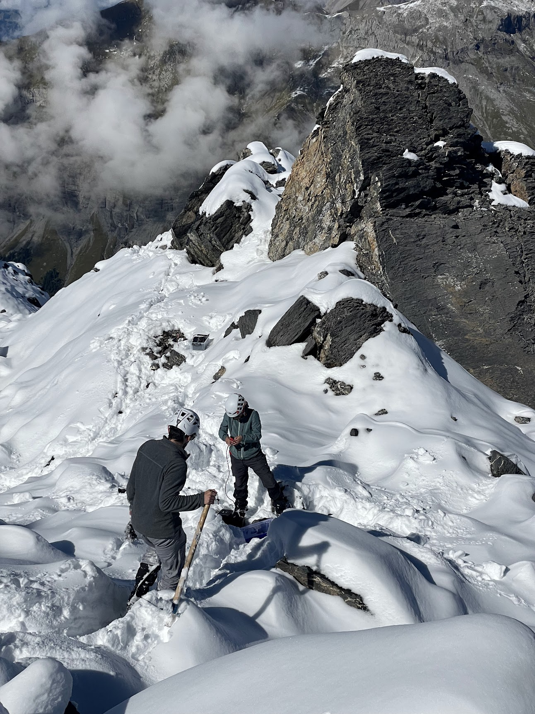
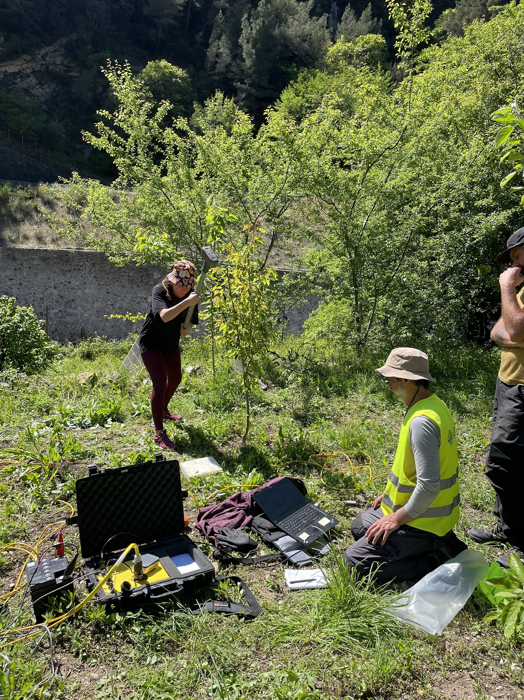

ERC St-G UNREST (2025-2030)
Principal Investigator: Małgorzata Chmiel
UNveiling dynamics of Rapid Erosion through advanced Seismic Techniques.
Floods and landslides are intensifying hazards, yet rapid erosion processes remain difficult to observe and predict. By developing a seismo–mechanico–hydrological approach, the UNREST project aims to monitor and anticipate these processes at high spatio-temporal resolution, providing new insight into the mechanisms that drive their transition to destructive events.

Project team
-
Bivas DAS — PhD student
Seismic characterization of active rockslides: from internal deformation to mass movement dynamics -
Odile DIB — PhD student
Monitoring flash flood dynamics across multiple scales using seismology -
Gabriela ARIAS — Postdoctoral researcher
Seismic interferometry-based monitoring of the Spitze Stei rockslide -
Sebastian OSORNO — Engineer
Distributed Acoustic Sensing of debris-flow activity -
Nicolas LEENHARDT — Engineer
AI-based detection of rapid surface processes
Recent Conference Abstracts
-
Dib, M.-O., Chmiel, M., Chapuis, M., Ampuero, J.-P., Abily, M., Mercerat, D., and Courboulex, F. (2026)
Seismic monitoring of sediment transport during flash floods: Case studies of Storms Alex and Aline on the Roya river, France.
EGU General Assembly 2026, Vienna, Austria, 3–8 May 2026, EGU26-9430
DOI -
Das, B., Chmiel, M., Courboulex, F., Walter, F., Martin, X., Osorno-Bolívar, J.-S., Kienholz, C., Arias, G., and van den Ende, M. (2026)
Seismic Transients of Internal Deformation in an Active Rockslide (Spitze Stei, Switzerland): First Insights from a Dense Seismic Nodal Array.
EGU General Assembly 2026, Vienna, Austria, 3–8 May 2026, EGU26-12096
DOI -
Osorno Bolivar, J. S., Chmiel, M., Walter, F., Blumenschein, F., and Friedli, K. (2026)
Distributed Acoustic Sensing of debris-flow activity in the Öschibach torrent (Swiss Alps).
EGU General Assembly 2026, Vienna, Austria, 3–8 May 2026, EGU26-11798
DOI
Fieldwork Impressions


Seismic node installations at the Spitze Stei rockslope (September 2025, Swiss Alps).
Photo credit: M. Chmiel

Field visit: the Vésubie River (Southern Alps, November 2025).
Photo credit: M. Abily


Active seismic measurements in the Roya Valley (Southern Alps, April 2025).
Photo credit: M. Chmiel